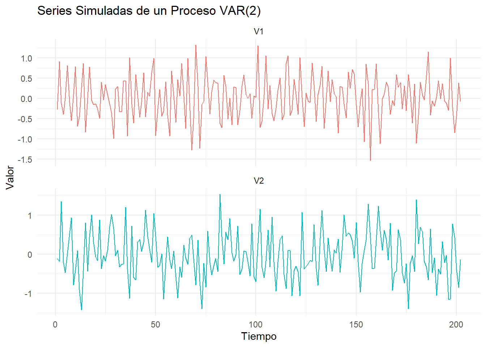
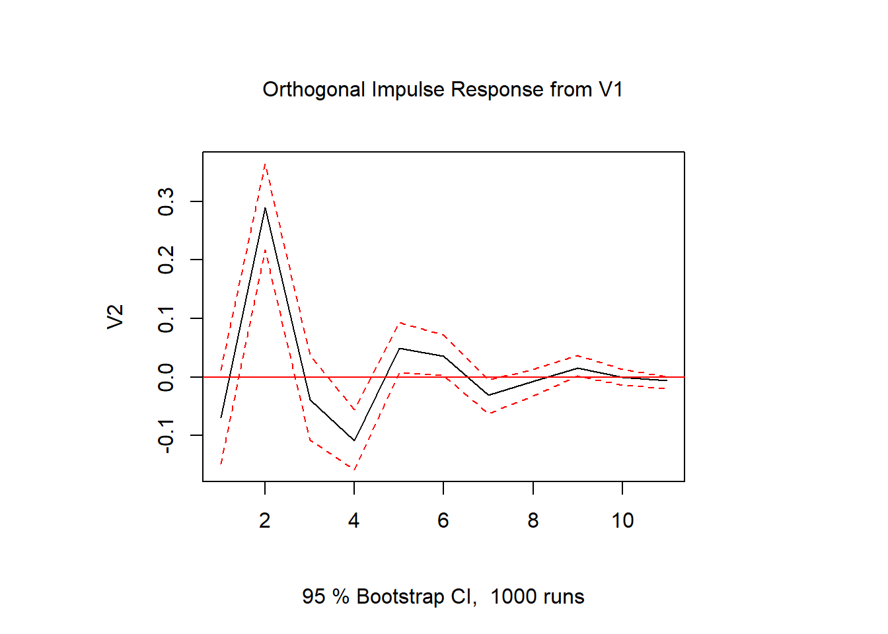

Taller 6: Modelos de Vectores Autorregresivos (VAR)
Análisis de Dinámica Multivariante con Datos Simulados
Author
Yuberley Cruz Caycedo
Published
August 14, 2025
1 Introducción a los Modelos VAR
Un modelo de vectores autorregresivos (VAR) es una herramienta econométrica fundamental para analizar la dinámica y las interdependencias entre múltiples series de tiempo. A diferencia de los modelos univariados (como los ARIMA), un VAR modela cada variable en el sistema como una función de sus propios valores pasados y de los valores pasados de todas las demás variables del sistema.
Definición de VAR: “Los modelos VAR son útiles cuando se está interesado en predecir múltiples series de tiempo y analizar las relaciones dinámicas que existen entre ellas. En un modelo VAR, cada variable es una función lineal de los valores pasados de sí misma y de los valores pasados de las otras variables.”
— Wooldridge, J. M. (2009). Introductory econometrics: A modern approach (4th ed.).
Por ejemplo, consideremos un sistema con dos series temporales: el PIB y la tasa de desempleo. Un modelo VAR para este sistema podría modelar tanto el PIB como la tasa de desempleo en función de sus valores pasados y de los valores pasados de la otra variable. Esto permitiría analizar cómo el PIB y la tasa de desempleo afectan mutuamente entre sí a lo largo del tiempo.
1.1 Del VAR Estructural al VAR en Forma Reducida
Veamos el modelo estructural dinámico [modelo (1)]:
Donde \(y_{1t}\) , \(y_{2t}\) son variables estacionarias, y \(\epsilon_{1t}\) , \(\epsilon_{2t}\) son procesos ruido blanco con esperanza cero y varianzas \(\sigma^{2}_{\epsilon_{1t}}\), \(\sigma^{2}_{\epsilon_{2t}}\) y covarianza \(\sigma_{12}\).
El modelo (1) es de ecuaciones simultáneas con dos variables endógenas \(y_{1t}\) y \(y_{2t}\) y un vector \(z_t\) de variables exógenas.
Un shock sobre \(y_{2t}\), en la forma de un valor no nulo de la innovación estructural \(\epsilon_{2t}\), afecta directamente a \(y_{2t}\), pero también influye a \(y_{1t}\) a través de la presencia de \(y_{2t}\) como variable explicativa en la primera ecuación.
Además, este efecto se propaga en el tiempo, debido a la presencia de los valores rezagados de ambas variables como variables explicativas.
Las variables explicativas exógenas \(z_t\) también pueden aparecer con rezagos en el modelo. Por ejemplo, \(z_t\) podría ser una tendencia determinista o que recoja la estacionalidad. \(z_t\) también puede representar variables tal que \(E(z_{t−s}{~}\epsilon_{1t})=𝐸(z_{𝑡-s} ~ \epsilon_{2𝑡})=0 ~ ∀_𝑠\). Por ejemplo, el precio de barril de petróleo que se determina en mercados internacionales mientras \(y_{1t}\) y \(y_{2t}\) son variables de la macroeconmía que se determinan en la economia interna.
Ahora, el Modelo (1) se puede representar de forma matricial de la siguiente forma:
Este modelo se conoce como VAR estructural y presenta dos problemas:
la simultaneidad, al aparecer cada una de las dos variables como variable explicativa en la ecuación de la otra, lo que genera inconsistencia del estimador MCO, podría resolverse estimando por variables instrumentales, siempre que contemos con instrumentos adecuados, lo cual no es sencillo de justificar. Además, el segundo problema podría persistir.
si los términos de error tuviesen autocorrelación, las estimaciones MCO serían inconsistentes, al tratarse de un modelo dinámico se resuelve tratando de ampliar la estructura dinámica del modelo hasta lograr que los términos de error carezcan de autocorrelación.
Supongamos que la matriz \(\Pi\) tiene inversa \(det(\Pi) \neq~ 0\) , tenemos entonces:
En la forma reducida de un modelo VAR (Modelo de Vectores Autorregresivos), las ecuaciones se expresan en términos de las variables endógenas del sistema en función de sus rezagos y, posiblemente, variables exógenas. La estructura de un modelo VAR en su forma reducida se puede describir de la siguiente manera:
Variables Endógenas: Estas son las variables que se están modelando en el sistema. Por ejemplo, si estamos modelando el PIB, la inflación y la tasa de interés, estas serían nuestras variables endógenas.
Rezagos: Cada variable endógena se expresa como una función lineal de sus propios rezagos y de los rezagos de las otras variables endógenas en el sistema. Por ejemplo, la variable endógena \(y_{1t}\) en el rezago \(j\) se puede expresar como \(y_{t-j}\).
Variables Exógenas (opcional): Además de las variables endógenas, el modelo VAR en su forma reducida puede incluir variables exógenas que no están determinadas dentro del sistema, pero que pueden afectar a las variables endógenas. Estas variables pueden incluir datos económicos, políticos o cualquier otro factor relevante.
Parámetros del Modelo: Los parámetros del modelo son los coeficientes que multiplican a los rezagos de las variables endógenas y, posiblemente, a las variables exógenas. Estos parámetros son estimados a partir de los datos y capturan la relación entre las diferentes variables en el sistema.
Error Término (Residuos): El término de error en la forma reducida del modelo VAR captura la parte de la variabilidad de las variables endógenas que no es explicada por los términos autoregresivos y las variables exógenas. Estos errores se suponen que son independientes e idénticamente distribuidos, con una distribución normal. donde las \(u\) son los terminos de error estocático, llamados impulsos, innovaciones o choques en el lenguaje VAR.
La utilizacion de muchas o muy pocas variables rezagadas puede conducir a un problema de consumo de muchos grados de libertad, la aparicion de la multicolinealidad o errores de especificacion. una forma de decidir esta cuestión es utilizar criterios como el de Akaike o el de Schwarz, para decidir el modelo que proporcione los valores mas bajo de estos.
El orden de los modelos VAR está dado por el número de rezagos que se usan en cada ecuación. El modelo descrito anteriormente es entonces un \(\textbf{VAR(1)}\), para denotar también el número de variables se usa\(\textbf{VAR}_{2}(1)\)
1.2 Criterios de Información
Un problema central en el análisis de modelos VAR es encontrar el número de rezagos que produce los mejores resultados. La comparación de modelos generalmente se basa en criterios de información como el Akaike AIC, Bayesiano BIC o Hannan-Quinn HQ, buscando que se minimice el valor del criterio de información.
\(AIC=\frac{−2} lT + \frac 2pT\)
\(BIC=\frac {−2}lT+ \frac {2ln(T)}T\)
\(HQ=\frac {−2}lT + \frac {2kln(ln(T))}T\)
Donde \(l=\frac {−Tk}{2}(1+ln(2π))−\frac T2ln(|Σ|)\), y \(p=k(d+nk)\) el número de parámetros estimados en el modelo VAR, siendo \(d\) es el número de variables exógenas, \(n\) el orden del VAR, \(k\) el número de variables endógenas.
Por lo general, el AIC es preferible a otros criterios, debido a sus características favorables de pronóstico de muestras pequeñas. El BIC y HQ, sin embargo, funcionan bien en muestras grandes y tienen la ventaja de ser un estimador consistente, es decir, converge a los valores verdaderos.
1.3 Funciones de Impulso Respuesta
Las funciones de impulso-respuesta (IRF) son una herramienta importante en el análisis de modelos VAR (Vector Autoregressive). Proporcionan información sobre cómo las variables en un sistema responden a los cambios en otras variables a lo largo del tiempo, específicamente en respuesta a un “impulso” o un shock en una de las variables.
Aquí hay una explicación detallada de las funciones de impulso-respuesta en modelos VAR:
Definición de Impulso-Respuesta: En un modelo VAR, el término “impulso” se refiere a un choque o shock que afecta a una de las variables del sistema. La función de impulso-respuesta describe cómo las otras variables del sistema responden a este impulso en el tiempo.
Cálculo de las IRF: Las IRF se calculan mediante simulación. Una vez estimado el modelo VAR, se introduce un impulso unitario (o un impulso en el nivel deseado) en una de las variables del sistema y se observa cómo las otras variables responden a este impulso a lo largo de múltiples períodos de tiempo.
Interpretación de las IRF: Las IRF muestran cómo un cambio en una variable afecta a otras variables en el sistema a lo largo del tiempo. Una IRF típicamente muestra cómo la variable endógena (o variable de respuesta) responde al impulso en una variable exógena (o variable de impulso) en diferentes horizontes temporales.
Propiedades de las IRF:
Dirección y Magnitud de la Respuesta: Las IRF muestran si las variables responden positiva o negativamente al impulso, así como la magnitud de esa respuesta.
Persistencia: Las IRF también indican si el efecto del impulso persiste en el tiempo o disminuye gradualmente.
Efectos Cruzados: Las IRF muestran cómo los diferentes impulsos afectan a las variables en el sistema, lo que puede ayudar a entender las interacciones entre las variables.
Utilidad de las IRF: Las IRF son útiles para evaluar el impacto de diferentes políticas o choques en una economía, comprender las dinámicas de las variables en un sistema económico y pronosticar el comportamiento futuro de las variables en función de cambios en otras variables.
1.4 Tipos de Funcion de Impulso Respuesta
En un modelo VAR (Vector Autoregression), se pueden calcular dos tipos de funciones de impulso respuesta:
Funciones de impulso respuesta al impulso unitario: Estas funciones muestran cómo las variables responden a un shock de una desviación estándar en una variable específica en un periodo de tiempo y cómo se propagan esos efectos a lo largo de los periodos siguientes. Es decir, muestran el impacto de un shock de una magnitud específica en una variable sobre las demás variables en el modelo.
Funciones de impulso respuesta acumuladas: Estas funciones muestran la respuesta acumulada de las variables a lo largo del tiempo después de un shock en una variable específica. Muestran cómo se acumulan los efectos de un shock en una variable sobre las demás variables en el modelo a lo largo de varios periodos.
Ambos tipos de funciones de impulso respuesta son útiles para analizar cómo se propagan los efectos de un shock en una variable a lo largo del tiempo y cómo afecta a las demás variables en el modelo VAR. Esto permite comprender mejor las interacciones entre las variables y predecir cómo se comportarán en respuesta a cambios en una de ellas.
1.5 Causalidad de Granger
La causalidad de Granger es un concepto importante en el análisis de series temporales que se utiliza para determinar si una serie temporal proporciona información útil para predecir otra serie temporal. Es una herramienta comúnmente utilizada en el contexto de los modelos VAR (Vector Autoregressive).
Aquí está una explicación detallada de la causalidad de Granger en el contexto de los modelos VAR:
Definición: La causalidad de Granger establece que una serie temporal \(y_{1t}\) “Granger-causa” a otra serie temporal \(y_{2t}\) si la información pasada de \(y_{1t}\) ayuda a predecir \(y_{2t}\) mejor que solo utilizando la información pasada de \(y_{2t}\).
Principio: Si la serie \(y_{1t}\) Granger-causa a la serie \(y_{2t}\), entonces los rezagos de \(y_{1t}\) se incluirán como predictores en el modelo para predecir \(y_{2t}\). En otras palabras, los rezagos de \(y_{1t}\) tienen un poder predictivo significativo para \(y_{2t}\).
Prueba de Causalidad de Granger: La causalidad de Granger se evalúa mediante una prueba estadística. En el contexto de los modelos VAR, esta prueba implica ajustar dos modelos:
Modelo restringido: Un modelo VAR que solo incluye rezagos de la serie \(y_{2t}\) como predictores para predecir \(y_{2t}\).
Modelo no restringido: Un modelo VAR que incluye rezagos tanto de la serie \(y_{2t}\) como de la serie \(y_{1t}\)como predictores para predecir \(y_{2t}\).
Comparación de Modelos: Después de ajustar ambos modelos, se utiliza una prueba estadística (se utiliza la estadisticaF) para comparar su ajuste. Si el modelo no restringido (que incluye rezagos de \(y_{1t}\) ) se ajusta significativamente mejor que el modelo restringido (que no incluye los rezagos de \(y_{1t}\)), entonces se concluye que la serie \(y_{1t}\) Granger-causa a la serie \(y_{2t}\).
Interpretación: Si se establece que la serie \(y_{1t}\) Granger-causa a la serie \(y_{2t}\), significa que la información pasada de \(y_{1t}\) contiene información adicional que ayuda a predecir \(y_{2t}\), más allá de lo que ya se puede predecir con la información pasada de \(y_{2t}\).
Causalidad de Granger: \(y_{1t}\) granger causa \(y_{2t}\) si un modelo que usa valores actuales \(y_{2t}\) pasados de \(y_{1t}\) y valores actuales y pasados de \(y_{2t}\) para predecir valores futuros de \(y_{2t}\) tiene un error de pronóstico menor que un modelo que solo usa valores actuales y pasados de \(y_{2t}\) para predecir \(y_{2t}\). En otras palabras, la causalidad de Granger responde a la siguiente pregunta: ¿ayuda el pasado de la variable \(y_{1t}\) a mejorar la predicción de los valores futuros de \(y_{2t}\)?
Causalidad instantánea: \(y_{1t}\) causa \(y_{2t}\) (en el sentido de Granger instantáneo) si un modelo que usa valores actuales, pasados y futuros de \(y_{1t}\) y valores actuales y pasados de \(y_{2t}\) para predecir \(y_{2t}\) tiene un error de pronóstico menor que un modelo que solo usa valores actuales y pasados de \(y_{1t}\) y valores actuales y valores pasados de \(y_{2t}\). En otras palabras, la causalidad instantánea de Granger responde a la pregunta: ¿conocer el futuro de \(y_{1t}\) me ayuda a predecir mejor el futuro de \(y_{2t}\)? Si sé que va a hacer \(y_{1t}\), ¿me ayuda a saber lo que va a saber \(y_{2t}\)?
2 Ejemplo: Análisis de un Sistema Bivariado Simulado
Para entender la metodología VAR, utilizaremos datos simulados. Esto nos permite conocer el verdadero proceso generador de datos y evaluar qué tan bien las herramientas econométricas lo recuperan.
2.1 1. Simulación de un Proceso VAR(2)
Generamos un sistema de dos variables (V1 y V2) que siguen un proceso VAR(2) estacionario.
Code
# --- Simulación del Modelo ---set.seed(123) # Misma semilla para tener los mismos resultados# Generamos muestrat <-200# tamaño de la seriek <-2# Número de variables endogenasp <-2# numero de rezagos# Generamos matriz de coeficientesA.1<-matrix(c(-.3, .6, -.4, .5), k) # Matriz de coeficientes del rezago 1A.2<-matrix(c(-.1, -.2, .1, .05), k) # Matriz de coeficientes del rezago 2A <-cbind(A.1, A.2) # Forma compuesta# Generamos las seriesseries_matrix <-matrix(0, k, t +2*p) # Inicio serie con cerosfor (i in (p +1):(t +2*p)){ # Generamos los errores e ~ N(0,0.5) series_matrix[, i] <- A.1%*%series_matrix[, i-1] + A.2%*%series_matrix[, i-2] +rnorm(k, 0, .5)}series <-ts(t(series_matrix[, -(1:p)])) # Convertimos a formato tscolnames(series) <-c("V1", "V2") # Renombrar variables# Convertir a un data frame largo para ggplot2plot_data <-as.data.frame(series) %>%mutate(Tiempo =1:nrow(.)) %>%pivot_longer(cols =c("V1", "V2"), names_to ="Variable", values_to ="Valor")# Graficos de la serie con ggplot2ggplot(plot_data, aes(x = Tiempo, y = Valor, color = Variable)) +geom_line() +facet_wrap(~Variable, scales ="free_y", ncol =1) +labs(title ="Series Simuladas de un Proceso VAR(2)", x ="Tiempo", y ="Valor") +theme_minimal() +theme(legend.position ="none")

Interpretación Gráfica: Las series simuladas parecen fluctuar alrededor de una media de cero, lo que es consistente con un proceso estacionario, como fue diseñado.
2.2 2. Pruebas de Raíz Unitaria
Aunque sabemos que las series son estacionarias por construcción, en un caso real verificaríamos esto formalmente.
Code
# Aplicar la prueba de Phillips-Perron a cada columnaapply(series, 2, function(s){ur.pp(s, type ="Z-tau", model ="constant", lags ="short")@teststat}) %>%t() %>%kable(caption ="Estadísticos de Prueba de Phillips-Perron para las Series Simuladas")
Estadísticos de Prueba de Phillips-Perron para las Series Simuladas
V1
V2
-17.5378
-12.42686
Interpretación: Los estadísticos de prueba son mucho más negativos que los valores críticos, lo que nos llevaría a rechazar la hipótesis nula de raíz unitaria y confirmar que las series son estacionarias.
2.3 3. Selección del Número de Rezagos (p)
Ahora, usamos los criterios de información para ver si podemos recuperar el verdadero orden del proceso, que sabemos es \(p=2\).
Code
# Selección de rezagos usando VARselectsel <-VARselect(series, lag.max =6, type ="none")# Presentar los resultados en una tablat(as.matrix(sel$criteria)) %>%kable(caption ="Criterios de Selección de Rezagos")
Criterios de Selección de Rezagos
AIC(n)
HQ(n)
SC(n)
FPE(n)
-2.837988
-2.810904
-2.771088
0.0585434
-2.922849
-2.868680
-2.789049
0.0537808
-2.910680
-2.829427
-2.709979
0.0544408
-2.876234
-2.767896
-2.608633
0.0563517
-2.843625
-2.708202
-2.509123
0.0582246
-2.809024
-2.646517
-2.407622
0.0602823
Interpretación: Todos los criterios de información (AIC, HQ, SC y FPE) seleccionan correctamente un orden de \(p=2\). Esto demuestra la efectividad de estos criterios cuando el modelo está bien especificado.
2.4 4. Estimación y Diagnósticos del VAR
Estimamos el modelo VAR(2) y realizamos las pruebas de diagnóstico.
Code
# Estimar el modelo VAR(2)modVar <-VAR(series, p =2, type ="none")
2.4.1 4.1 Prueba de Estabilidad
Code
# Prueba de estabilidadroots_modVar <-roots(modVar)print(paste("Todas las raíces son menores a 1:", all(roots_modVar <1)))
[1] "Todas las raíces son menores a 1: TRUE"
Interpretación: Todas las raíces tienen un módulo menor a 1, por lo que el modelo VAR(2) estimado es estable, como se esperaba.
2.4.2 4.2 Diagnósticos sobre los Residuos
Code
# Pruebas de diagnósticoserial_test <-serial.test(modVar, lags.bg =12, type ="BG")arch_test <-arch.test(modVar, lags.multi =5)normality_test <-normality.test(modVar)# CORREGIDO: Calcular el estadístico y p-value de Jarque-Bera combinadojb_stat <- normality_test$jb.mul$Skewness$statistic + normality_test$jb.mul$Kurtosis$statisticjb_df <- normality_test$jb.mul$Skewness$parameter + normality_test$jb.mul$Kurtosis$parameterjb_pval <-1-pchisq(jb_stat, df = jb_df)# Presentar resultados en una tablatibble(Prueba =c("Breusch-Godfrey (Autocorrelación)", "ARCH-LM (Heterocedasticidad)", "Jarque-Bera (Normalidad)"),`Estadístico`=c(serial_test$serial$statistic, arch_test$arch.mul$statistic, jb_stat),`p-value`=c(serial_test$serial$p.value, arch_test$arch.mul$p.value, jb_pval)) %>%kable(caption ="Pruebas de Diagnóstico Multivariantes sobre los Residuos")
Pruebas de Diagnóstico Multivariantes sobre los Residuos
Prueba
Estadístico
p-value
Breusch-Godfrey (Autocorrelación)
43.628478
0.6524127
ARCH-LM (Heterocedasticidad)
40.459685
0.6644916
Jarque-Bera (Normalidad)
4.586017
0.3324696
Interpretación de los Diagnósticos: Todos los p-values son altos (mayores a 0.05), por lo que no rechazamos las hipótesis nulas. Esto indica que los residuos del modelo se comportan como un ruido blanco: no tienen autocorrelación, son homocedásticos y se distribuyen normalmente. El modelo está bien especificado.
2.5 5. Funciones de Impulso-Respuesta (IRF)
Analizamos cómo responde una variable a un shock en la otra. Usamos la descomposición de Cholesky, asumiendo que V1 es contemporáneamente más exógena que V2.
Code
# Calcular y graficar la IRFir_v1_v2 <-irf(modVar, impulse ="V1", response ="V2", ortho =TRUE, # Usar descomposición de Choleskyboot =TRUE, runs =1000, ci =0.95)plot(ir_v1_v2)

Respuesta de V2 a un shock en V1.
Interpretación: El gráfico muestra la respuesta de V2 a un shock positivo de una desviación estándar en V1. Se observa un efecto positivo y significativo en V2 durante los primeros periodos, que luego se disipa y converge a cero, como es de esperar en un sistema estacionario.
2.6 6. Causalidad de Granger
Finalmente, evaluamos si los rezagos de una variable ayudan a predecir a la otra.
Code
# Realizar pruebas de causalidad para cada variablecausality_results <-list()for(v incolnames(series)){ causality_results[[v]] <-causality(modVar, cause = v)}# Presentar un resumentibble(Causa =names(causality_results),`p-value Granger`=map_dbl(causality_results, ~ .x$Granger$p.value),`p-value Instantánea`=map_dbl(causality_results, ~ .x$Instant$p.value)) %>%kable(caption ="Resultados de las Pruebas de Causalidad de Granger")
Resultados de las Pruebas de Causalidad de Granger
Causa
p-value Granger
p-value Instantánea
V1
0.00e+00
0.0503066
V2
1.03e-05
0.0503066
Interpretación: Ambos p-values para la causalidad de Granger son muy bajos (menores a 0.05). Esto significa que rechazamos la hipótesis nula en ambos casos. Concluimos que los rezagos de V1 ayudan a predecir V2, y los rezagos de V2 ayudan a predecir V1. Existe una causalidad bidireccional, lo cual es consistente con la forma en que construimos nuestras matrices de coeficientes.